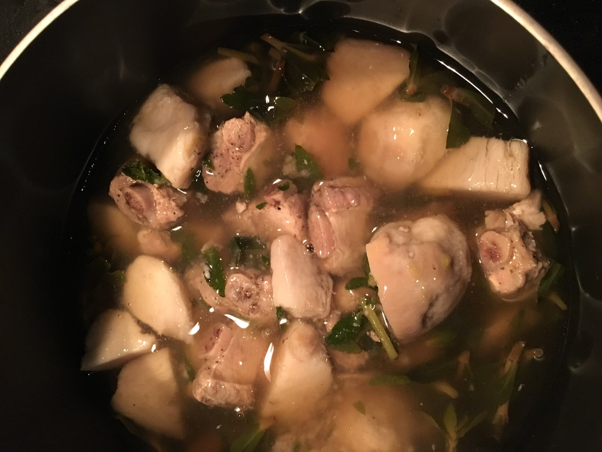
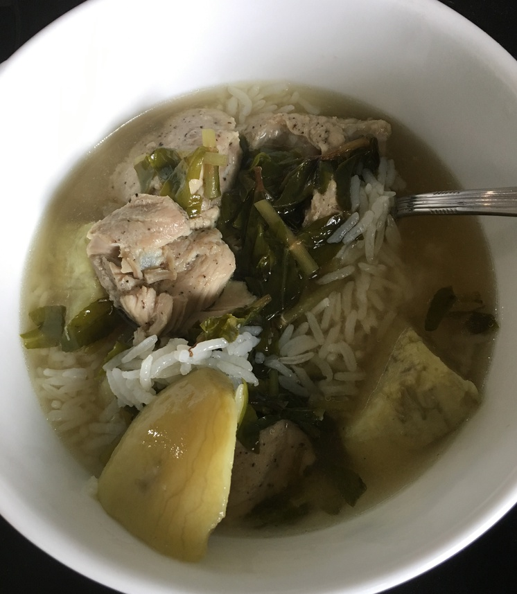

| Other | Meat | Veggie | Fruit |
|---|---|---|---|
| chicken broth | pork rib tips | rice paddy herbs | |
| pepper | shallot | ||
| salt | taro | ||
| wonton soup base | yam |
| instructions |
|---|
| Marinate the pork in salt, pepper, shallots |
| Blanche meat, then dump liquid and thoroughly rinse to remove impurities |
| Boil pork rib tips with extra marinade on medium heat |
| When foam starts to form, lower heat and remove foam |
| When foam all clear, turn to medium high heat and cover loosely with lid |
| Add chicken broth and wonton soup base |
| Boil taro or yam in a separate pot |
| Add taro or yam to soup |
| Add rice paddy herbs (ngo om) in the last few minutes |